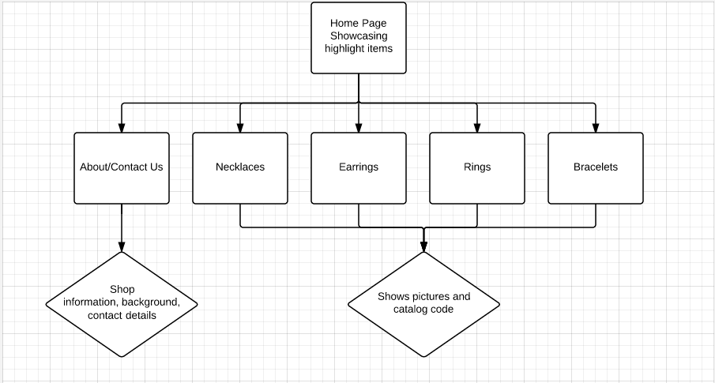

Brainstorm Ideas
- Design a site for a restaurant or café
- A site for fashion week, to keep track of the shows, post images and share reviews
- Portfolio for an art student
Choosing an Idea
Dog Store Website
At first, we considered Ankeeta's idea to make a website for a dog store, but we came across issues when trying to establish a real life client. Because the store was still in its planning stage and not opening anytime soon, we had very little to work with.
Fashion Week
My fashion week idea was another one we considered, but we had to drop that one as well, because despite the fact that there was a very viable audience, we didn't have a real life client.
Jewelry Site
After having to scrap two ideas because we didn't have a client, we finally decided to go with Puneet's idea. His parents own a jewellery store in India, and they needed a website that can act as a catalog of their products for the store's clients. The catalog would show the pictures, catalog codes, and prices of the pieces, and would provide contact information to the store should the clients want to purchase their jewelry.
Planning Out the Site
The Basics
We decided on making a website for Puneet's parents' jewelry store. The website will display the products on sale, like a catalog, as well as the item codes and contact information. We want the site to be accessible, so we're trying to avoid too many subpages. Also, the site should be visually appealing, and should match the theme and style of the jewelry if possible.
Project Brief
Audience
Buyers who are looking to sell jewelry to other customers, or the customers themselves who are looking for new and exotic jewelry separate from the regular trend.
Specific Purpose
Shows the buyers and customers the products that the shop carries, as well as product codes, and background and contact information on the store.
Client
The owner of the jewelry store (Puneet's parents). The site solves their problem or not being able to inform their customers of the products that the store carries. It will showcase the jewelry to people who can't access the actual shop in India conveniently.
Objectives
To make a visually appealing site that clearly shows the variety of products that the shop has. It should provide contact information and product codes, so that customers can order the jewelry. Furthermore, the site should be easy to navigate and access.
Success Criteria

Flowchart Ideas

Final Flowchart

We decided on this flowchart over the first one, because it requires less clicks to get to the pages with the actual products. This will save time for the customer, and reduces the unnecessary filler pages that will make navigating the site more difficult.
Progress Chart
The following shows our progress so far, and the work that still needs to be done.

Mapping Out the Webpages
Wireframes
Today, we started making wireframes in class for the home page of our jewellery website. We worked off of several hand written ideas that we had, and each group member redid one of the ideas on Fireworks to better show the potential layout of the website. When deciding how to construct our home page, we consulted many well known jewellery websites, such as Tiffany, Cartier, and Van Cleef n Arpels. Below is my first HI-FI wireframe of our site's main page: